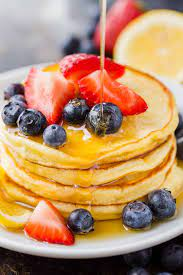

Breakfast Pancakes

Fluffy breakfast pancakes with fresh fruit
Ingredients
- 200g Self-raising flour
- 1 tsp Baking powder
- 1 Egg
- 300ml Milk
- Butter
- Blueberries
- Strawberries
- Maple syrup
Method
- Combine flour, baking powder and a pinch of salt. Mix together egg and milk. combine both mixtures.
- Beat in a small amount of melted butter.
- Heat some butter in a non-stick pan.
- Drop a large spoonful of pancake batter into the pan and cook on both sides until brown.
- Stack cooked pancakes and add fresh blueberries, strawberries and maple syrup.